plot(iris) 
Representations graphiques avec les fonctions primitives
Le langage R met à disposition un ensemble de fonctions pour la représentation graphique via le package pré-installé graphics . Bien que l’on préférera des packages spécialisés et plus complets comme ggplot2 pour créer de jolis graphiques personnalisés, les fonctions R-base de représentation peuvent être très utiles en matière d’exploration de données.
Les fonctions graphiques peuvent être classées en trois catégories :
I. Les fonctions permettant de créer différents types de graphiques :
plot() : Fonction générique de représentation graphiquematplot() : Dispersions de toutes le variables d’un tableau (un graphique)pairs() : Matrice de nuage de point pour l’ensemble des variables d’un tableaustripchart() : diagrammes de dispersiondotchart() : diagramme en points de Clevelandboxplot() : diagramme en boîteqqnorm() : diagramme quantile-quantile théorique normalqqplot() : diagramme quantile-quantile empiriquebarplot() : diagramme à barrespie() : diagramme en secteursmosaicplot() : diagramme en mosaïquespineplot() : diagrammes en épine (entre l’histogramme et le mosaic plot)hist() : histogrammecurve() : Représentation d’une expression mathématiqueII. les fonctions permettant d’ajouter de l’information à un graphique existant :
legend() : légendetitle() : titredensity() : courbe de densité à noyaupoints() : pointrug() : représentation stripchart le long de l’axe des xlines() : segments de droites reliant des pointsmatlines() : segments de droites reliant des points (utiliser avec matplot())abline() : droites traversant toute la zone graphiquetext() : texte dans la zone graphiquemtext() : texte dans la margeIII. Les fonctions utilisées pour fixer et contrôler des paramètres graphiques généraux :
par()layout()
La fonction primitive de représentation graphique la plus couramment utilisée est la fonction plot(). Il s’agit d’une fonction générique dont le comportement s’adapte automatiquement à la nature de ses arguments.
En fonction du type de variable choisie, la fonction plot() peut produire un graphique de style barplot, spineplot, stripchart, barplot ou curve.
Il est même possible d’exécuter cette fonction sur l’ensemble d’un dataframe. Des nuages de points par couple de variables seront alors automatiquement produits :
plot(iris)
Deux syntaxes sont possibles pour utiliser cette fonction sur deux variables :
x <- seq(-pi, pi, 0.1)
y <- sin(x)
plot(x, y) 
plot(y ~ x) 
Dans l’expression y ~ x, y désigne la variable dépendante (à expliquer) et varX la variable indépendante (explicative).
La fonction plot() accepte une multitude d’arguments qui permettent de façonner les graphiques (voir le Help pour plus de détails).
plot(y ~ x,
type = "o", # type de tracé: points ("p"), lignes ("l"), les deux ("b" ou "o"), ...
col = "red", # couleur, tapez `colours()` pour la liste complète
pch = 20, # type de symboles, un chiffre entre 0 et 25, tapez `?points`
cex = 1.1, # taille des symboles
lty = 1, # type de lignes, un chiffre entre 1 et 6
lwd = 1.4, # taille de lignes
xlim = c(-2.5, 2.5), # limites de l'axe des x
ylim = c(-1.5, 1.5), # limites de l'axe des y)
xlab = "La variable x", # titre pour l'axe des x
ylab = "Le sinus de x", # titre pour l'axe des y
main = "La fonction sinus entre -pi et pi" # titre général pour le graphique
) 
Une fois le graphique construit, plusieurs fonctions primitives vous permettre d’ajouter différents éléments. Exemple :
plot(y ~ x,
type = "o", # type de tracé: points ("p"), lignes ("l"), les deux ("b" ou "o"), ...
col = "red", # couleur, tapez `colours()` pour la liste complète
pch = 20, # type de symboles, un chiffre entre 0 et 25, tapez `?points`
cex = 1.1, # taille des symboles
lty = 1, # type de lignes, un chiffre entre 1 et 6
lwd = 1.4, # taille de lignes
xlim = c(-2.5, 2.5), # limites de l'axe des x
ylim = c(-1.5, 1.5), # limites de l'axe des y)
xlab = "La variable x", # titre pour l'axe des x
ylab = "Le sinus de x") # titre pour l'axe des y)
# Ajout d'une LEGENDE
legend(x = 0.9, # Emplacement de la légende (coin haut gauche)
y = -1.1, # Emplacement de la légende (coin haut gauche)
legend = "Fonction sinus entre -pi et pi",
bg = "lightgoldenrod",
col = "red",
pch = 20,
cex = 0.7, # Taille de lé lagende
lty = 1,
lwd = 1.4)
# Ajout d'une LIGNE (horizontale)
abline(h = 0, # Coupe l'axe des y à cette valeur
lty = 2, # Type de ligne
lwd = 0.5, # épaisseur
col = "grey50")
# Ajout d'un POINT
points(x = -0,
y = 0,
col = "red4",
pch = 20,# Type de symbol
cex = 4)
# Ajout de TEXTE
text("x = 0 = y", # Texte à afficher
x = 0.4, # Emplacement du texte (centre)
y = -0.16, # Emplacement du texte (centre)
col = "red4")
# Ajout d'un TITRE
title("Titre de mon graphique",
cex.main = 1.2,
font.main= 4,
col.main= "red4")
Deux fonctions - par() et layout() - permettent de gérer les paramètres graphiques, comme la disposition des figures, les marges, les axes, la police… :
Exemple d’utilisation de la fonction par() qui contient un grand nombre d’arguments possibles (cf. ?par) :
par(bg = "royalblue1", # Couleur de fond
col= "white", # couleur du graphique
mfrow = c(2,2), # Fenêtre découper en deux lignes / deux colonnes (4 graphiques)
mar = c(5,3,4,1)) # Gestion des marges pour chaque graphique (B,L,T,R)
plot(x = log(1:10), y = 10:1, main = "plot 1")
plot(x = exp(1:10), y = log(1:10), main = "plot 2")
plot(x = sin(1:10), y = 1:10, main = "plot 3")
plot(x = 1:10, y = exp(1:10), main = "plot 4")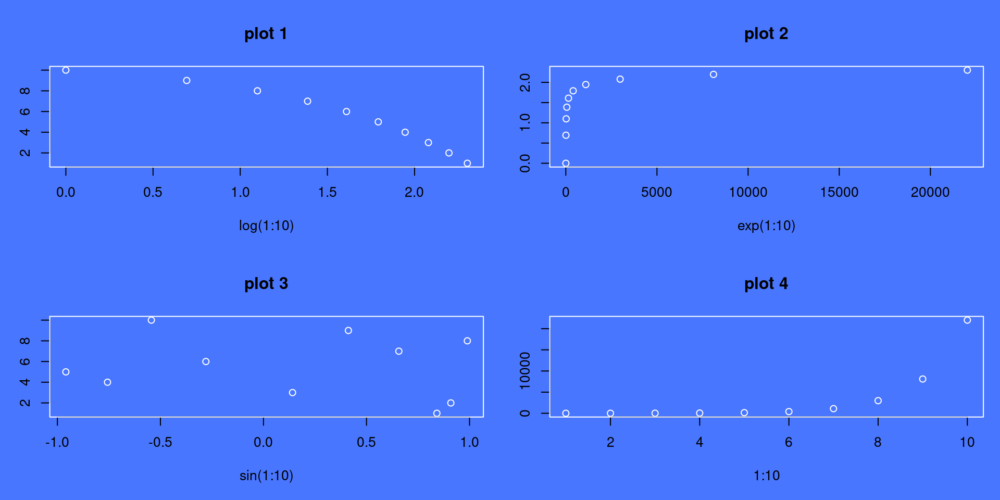
layout() propose moins d’arguments mais permet un meilleur ajustement de la disposition des figures. Pour cela, il est nécessaire de construire une matrice pour indiquer la position et l’espace de chaque graphique ajouté. Exemple :
matrix(c(1,1,1,2,0,3,2,0,3), 3, 3, byrow = TRUE) [,1] [,2] [,3]
[1,] 1 1 1
[2,] 2 0 3
[3,] 2 0 3Avec la matrice ci-dessus, la fenêtre graphique sera paramétrée pour contenir trois graphiques. Le graphique 1 occupera toute la première ligne. le graphique 2 occupera les deux dernières lignes de la première colonne, et le 3e sera situé dans les deux dernières lignes de la dernière colonne. Exemple :
par(bg = "royalblue1", col= "white")
# Découpage de la fenêtre graphique
layout(mat = matrix(c(1,1,1,2,0,3,2,0,3), 3, 3, byrow = TRUE))
plot(x = exp(1:10), y = log(1:10), main = "plot 1")
plot(x = sin(1:10), y = 1:10, main = "plot 2")
plot(x = log(1:10), y = 10:1, main = "plot 3")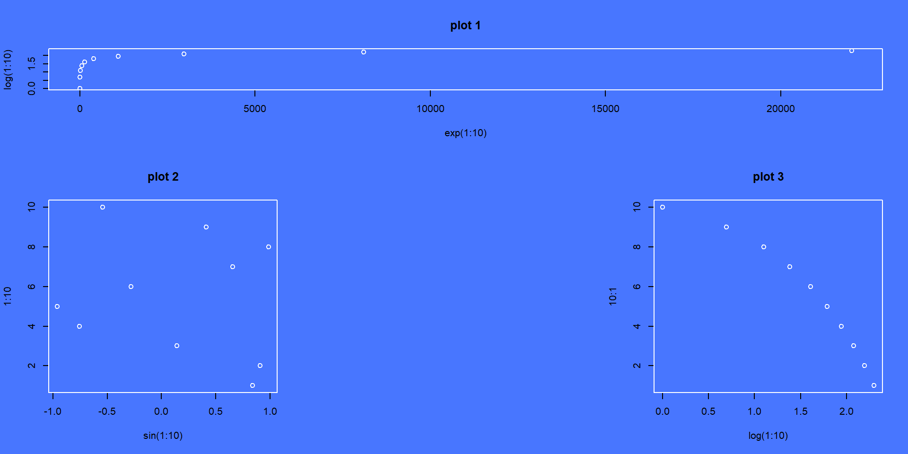
Pour représenter la distribution d’un variable quantitative, plusieurs types de graphiques peuvent être utilisés.
La fonction stripchart() permet de représenter la distribution d’une variable quantitative.
par(mfrow = c(2,2))
# gauche supérieur
stripchart(cars$speed, xlab = "speed", pch = 16)
# droite supérieur
stripchart(cars$speed, xlab = "speed", method = "stack", pch = 16)
# gauche inférieur
stripchart(cars$speed, xlab = "speed", method = "jitter", pch = "#")
# droite inférieur
stripchart(cars$speed, ylab = "speed", method = "jitter", vertical = TRUE)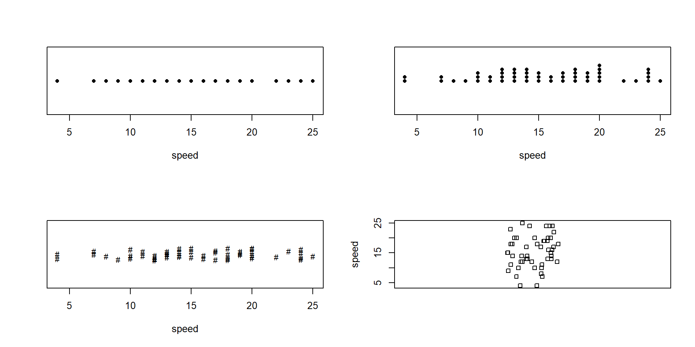
La fonction hist() permet de construire un histogramme.
par(mfrow = c(2,2))
# gauche supérieur
hist(cars$speed)
# droite supérieur
hist(cars$speed, breaks = quantile(cars$speed), main = "Histogramme par quartile")
# gauche inférieur
hist(cars$speed, freq = FALSE, main = "Histogramme des proportions")
# droite inférieur
hist(cars$speed, freq = FALSE, main = "Histogramme et densité échantillonnale")
lines(density(cars$speed))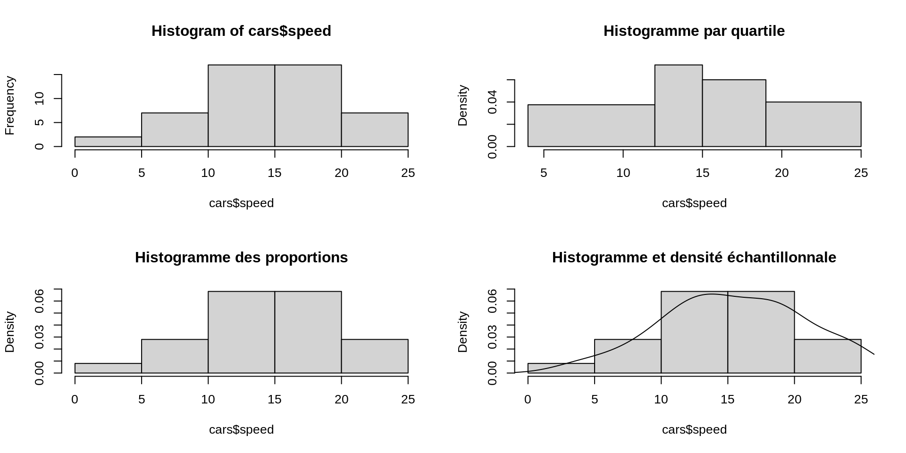
La fonction boxplot()permet de construire une boîte à moustache. Elle peut être associée à la fonction stripchart().
par(mfrow = c(1,2))
# gauche
boxplot(cars$dist)
# droite
boxplot(cars$dist, horizontal=T, varwidth= TRUE, col = "red4", outline = FALSE)
stripchart(cars$dist, pch = 16, metho = "jitter", add = TRUE)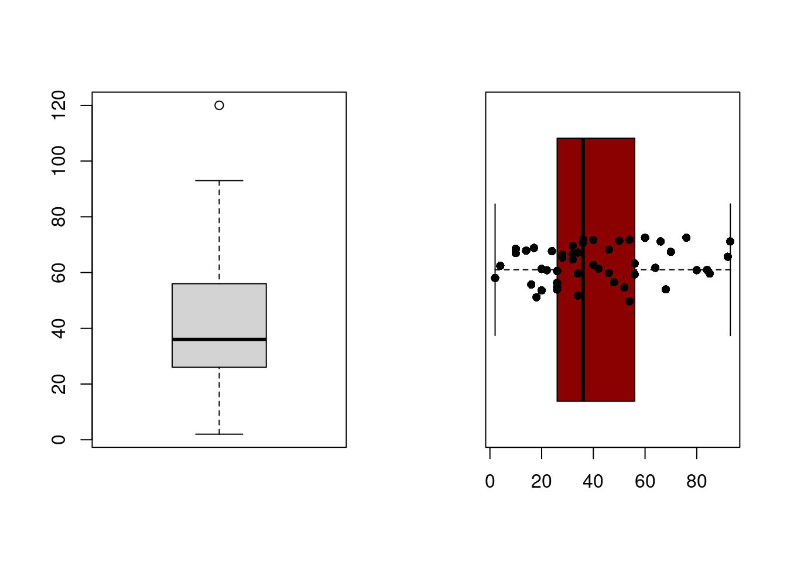
Utilisez la fonction plot() pour représenter deux variables quantitatives.
plot(speed ~ dist, data = cars, pch = 16)
# Ajout d'une marque pour chaque individus le long de l'axe des abcisses
rug(cars$dist)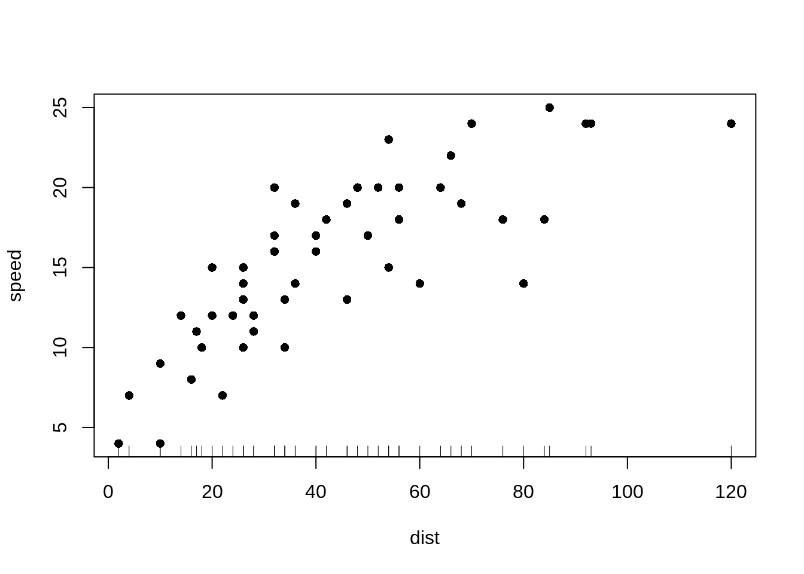
La fonction plot() peut être utilisée pour une variable qualitative. Pour cela la variable doit être stockée dans le format factor.
class(esoph$alcgp)[1] "ordered" "factor" plot(esoph$agegp)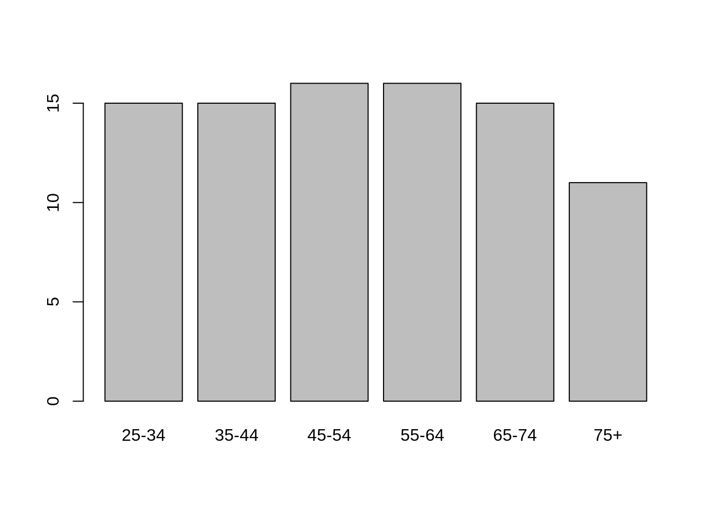
Vous pouvez utiliser la fonction barplot() sur une table de fréquence.
# Calcul table de fréquence
table_freq <- table(esoph$agegp)
# Fréquence par modalité
table_freq
25-34 35-44 45-54 55-64 65-74 75+
15 15 16 16 15 11 barplot(table_freq )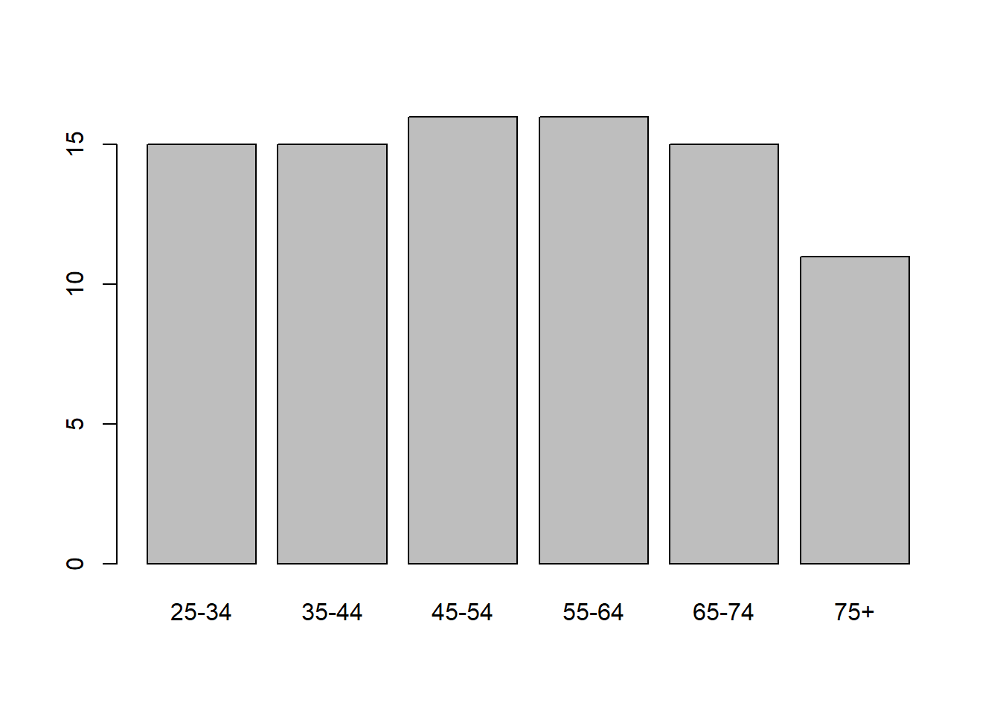
Comme avec une variable qualitative, vous pouvez utiliser les fonction plot() et barplot() pour représenter La répartition d’individus en fonction de deux variables qualitatives.
Comme avec une seule variable, les variables qualitatives croisées doivent être stockée en factor.
plot(alcgp ~ agegp, data = esoph)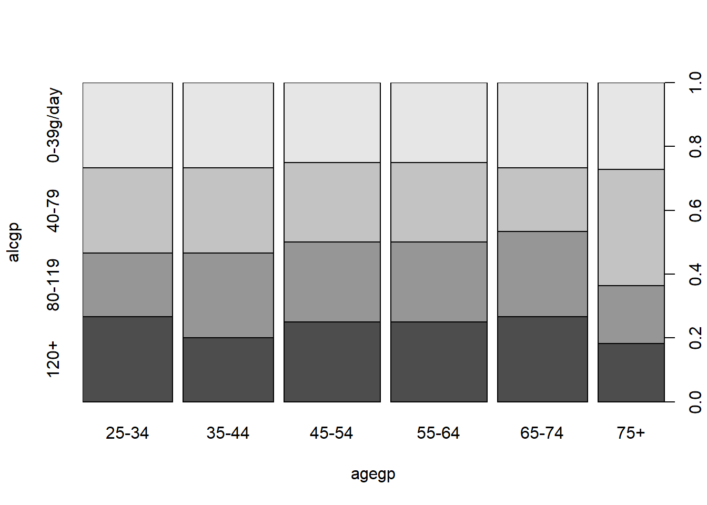
La fonction barplot fonctionne également sur deux variables qualitatives. Dans un premier temps, calculez le tableau croisé à partir des deux variables qualitatives ciblées :
# Calcul table de fréquence
table_freq <- table(esoph$alcgp, esoph$agegp)
# Fréquence par modalité
table_freq
25-34 35-44 45-54 55-64 65-74 75+
0-39g/day 4 4 4 4 4 3
40-79 4 4 4 4 3 4
80-119 3 4 4 4 4 2
120+ 4 3 4 4 4 2Puis utilisez la fonction barplot() :
par(mfrow = c(2,2))
# gauche supérieur
barplot(table_freq)
# droite supérieur
barplot(table_freq, horiz = TRUE)
# gauche inférieur
barplot(table_freq, horiz = TRUE, beside=TRUE)
# droite inférieur
barplot(table_freq, beside=TRUE, legend.text = levels(esoph$alcgp),
args.legend=list(x="bottomright"))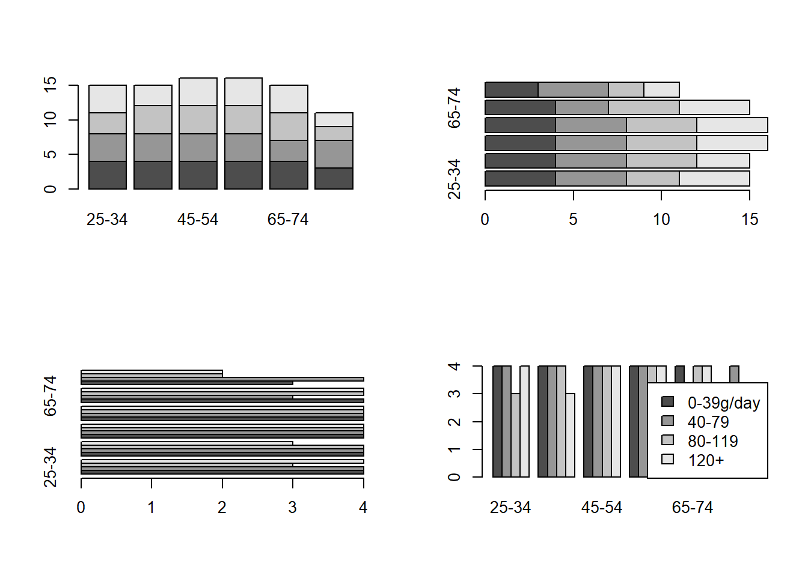
La fonction généraliste plot() peut être utilisée. Si la variable qualitative est appelée en première, le graphique prendra la forme d’un spine plot (%). Dans le cas contraire, la fonction renverra un ensemble de boxplots.
par(mfrow = c(1,2))
# Spine plot
plot(agegp ~ ncases, data = esoph, main = "Spine plot")
# Boxplot
plot(ncases ~ agegp, data = esoph, main = "Boxplots")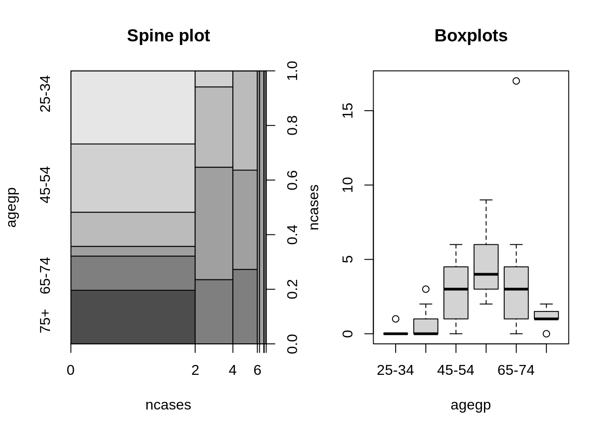
Il est également possible d’utiliser directement la fonction boxplot pour représenter la distribution de chaque individus pour une variable quantitative, par modalité d’une variable qualitative :
boxplot(ncases ~ agegp, data = esoph)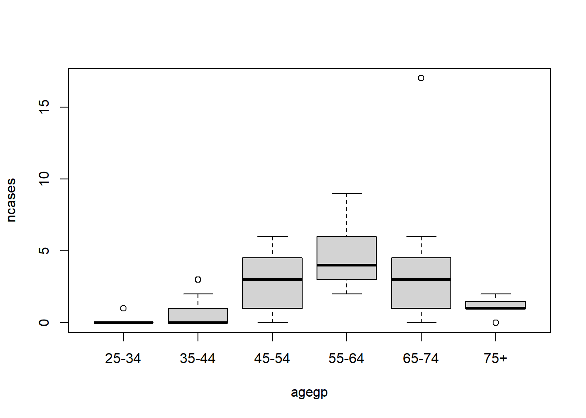
L’argument col de la fonction plot() permet aussi de représenter trois variables (quantitative ~ quantitative + qualitative). Pour cela, il est préférable d’utiliser une variable qualitative stockée en format factor.
# Conversion de la variable qualitative en format factor
mtcars$cyl <- as.factor(mtcars$cyl)
# Nuage de point
plot(disp ~ wt,
data = mtcars,
col = cyl, # Couleur des points en fonction d'une variable qualitative
pch = 16,
xlab = "Weight",
ylab = "Displacement")
# Ajout d'une légende
legend(x = "bottomright",
title = "Number of cylinders",
legend = levels(mtcars$cyl),
col = 1:3,
ncol = 3,
pch = 16)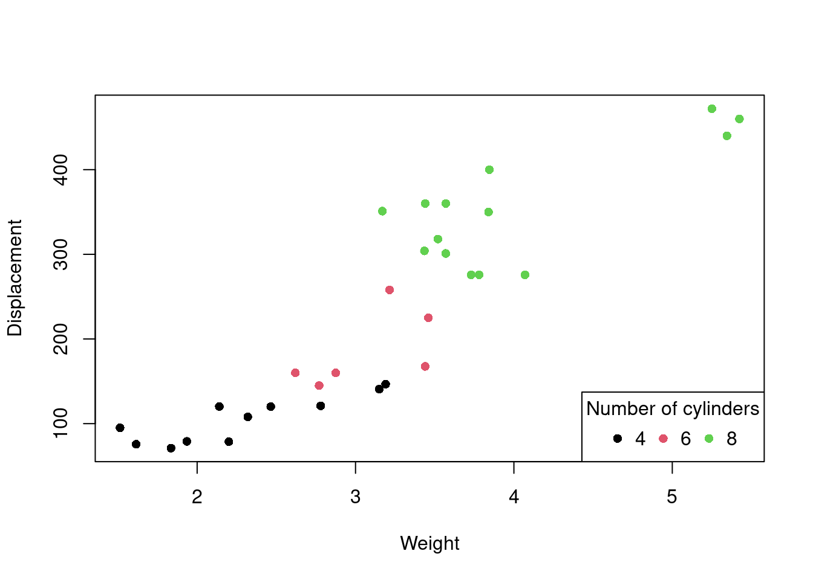
La fonction pairs() (ou plot()) permet de construire une matrice du nuages de points entre toutes les variables d’un tableau, quelque soit leur type.
pairs(iris)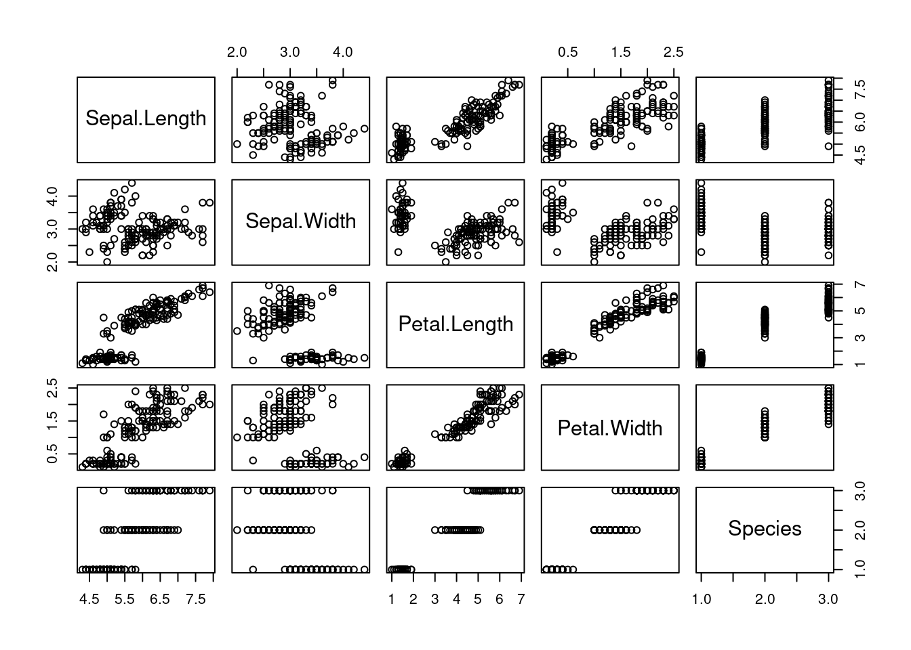
La fonction curve() permet de tracer de représenter une expression mathématique.
curve(expr = (x), col = "grey30", from = -2, to = 2)
curve(expr = x^2, col = "green4", add = TRUE)
curve(expr = x^3, col = "red", add = TRUE)
legend("bottomright", title = "Function",
legend = c("(x)", "x^2", "x^3"),
col = c("grey30", "green4", "red"),
lty = 1)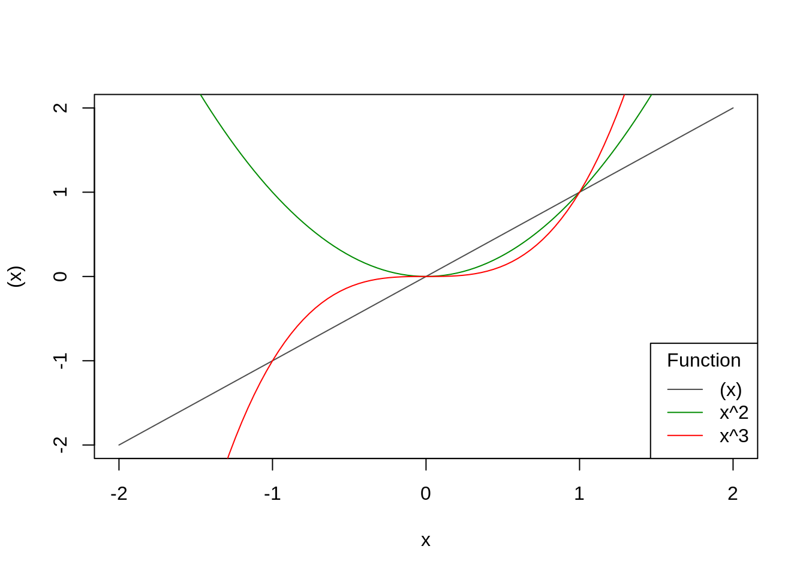
Un graphique crée dans RStudio est affiché par défaut dans l’onglet Plots. Dans cet onglet, vous pouvez zoomer sur le graphique en cliquant sur le bouton Zoom. Vous pouvez aussi enregistrer le graphique en cliquant sur le bouton Export :
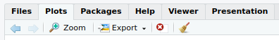
L’export d’un graphique peut être automatisé en ligne de code R de différente manière (cf. module import). Le procédure d’export la plus simple peut être réalisé avec la fonction dev.print(). Cette fonction permet aussi bien un export en format vectoriel que matricielle du graphique affiché.
# Format pdf
dev.print(device = pdf, "graph_export.pdf", width = 600)
# format svg
dev.print(device = svg, file = "graph_export.svg", width = 6)
# format png
dev.print(device = png, file = "graph_export.png", width = 600)
# format png
dev.print(device = jpeg, file = "graph_export.jpeg", width = 600)
1. Créez un projet Rstudio
File/New Project/New Directory…
2. Téléchargez les données suivantes :
| Intitulé | Téléchargement |
|---|---|
| Données pays africains (UN-CEPII) | Download |
3. Placez les données (décompressées) dans le répertoire de votre projet, de la façon suivante :

4. Importez le fichier “afrika_don.csv” dans un data.frame
... <- read.csv2(file = "...")5. Construisez un histogramme par quartile pour la variable “POP” :
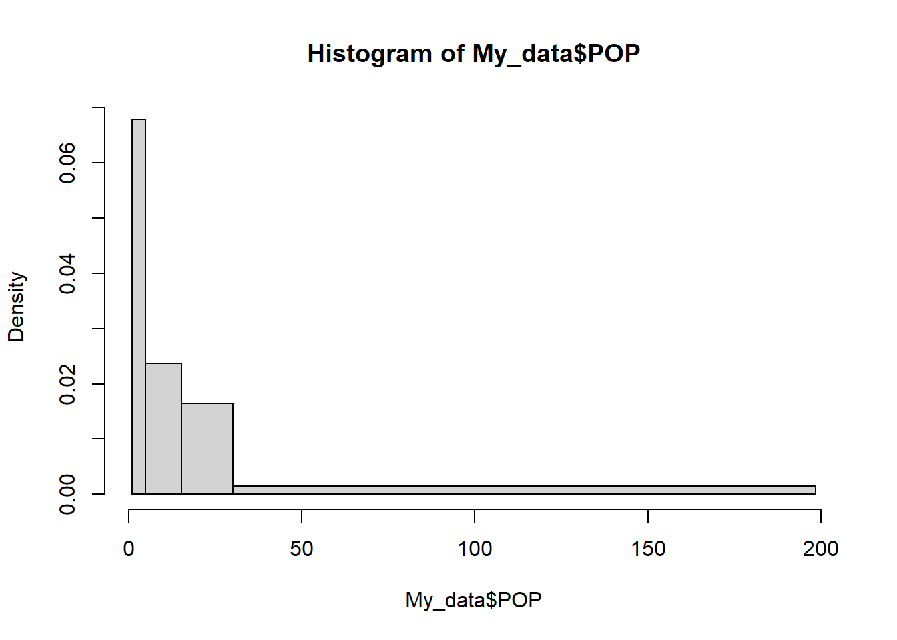
hist(..., breaks = quantile(...))6. Améliorez la mise en page, en ajoutant par exemple un peu de couleur, un titre, une source… :
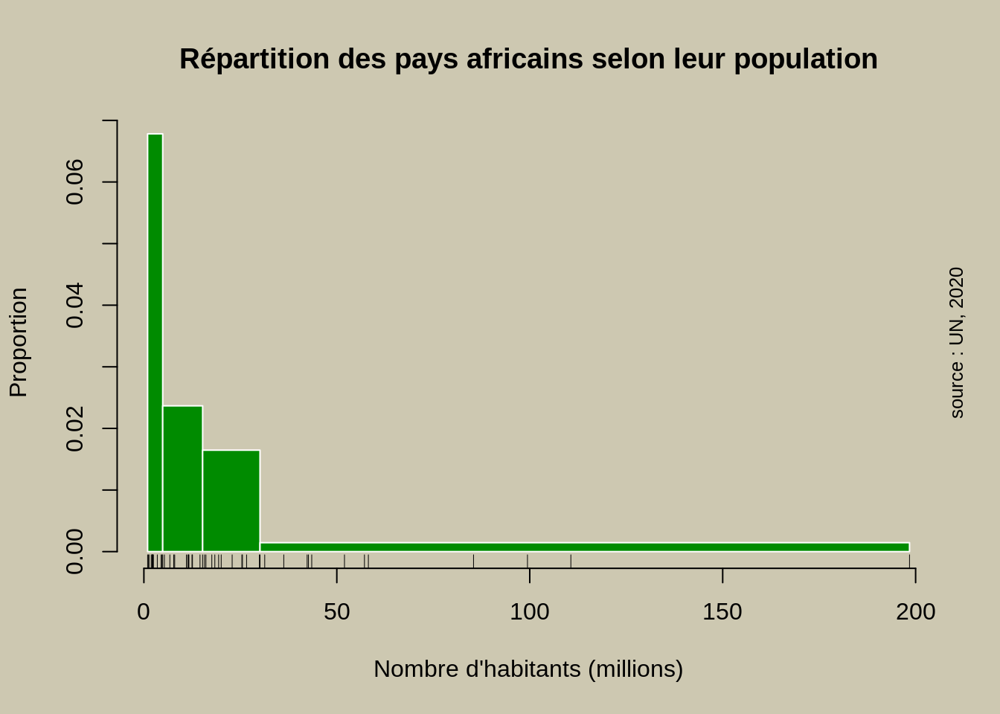
par(bg = "cornsilk3")
hist(My_data$POP,
breaks = quantile(My_data$POP),
col = "green4",
border = "white",
xlab = "Nombre d'habitants (millions)",
ylab = "Proportion",
main = "Répartition des pays africains selon leur population")
rug(My_data$POP)
mtext(side = 4, "source : UN, 2020", cex = 0.8)7. Exportez le graphique à l’aide d’une fonction (format png)
dev.print(device = ..., file = "...")
# Import des données
data <- read.csv2(file = "../data/DEV_AFRICA_2018/afrika_don.csv")
# Paramétrage de la couleur de fond de la fenêtre graphique
par(bg = "cornsilk3")
# Histogramme sur la variable 'POP'
hist(data$POP,
breaks = quantile(data$POP),
col = "green4",
border = "white",
xlab = "Nombre d'habitants (millions)",
ylab = "Proportion",
main = "Répartition des pays africains selon leur population")
# Ajout de marques pour chaque individus (axe des abscisses)
rug(data$POP)
# Ajout de la source des données
mtext(side = 4, "source : UN, 2020", cex = 0.8)
# Export en PNG
dev.print(device = png, file = "mon_graphique.png", width = 600)